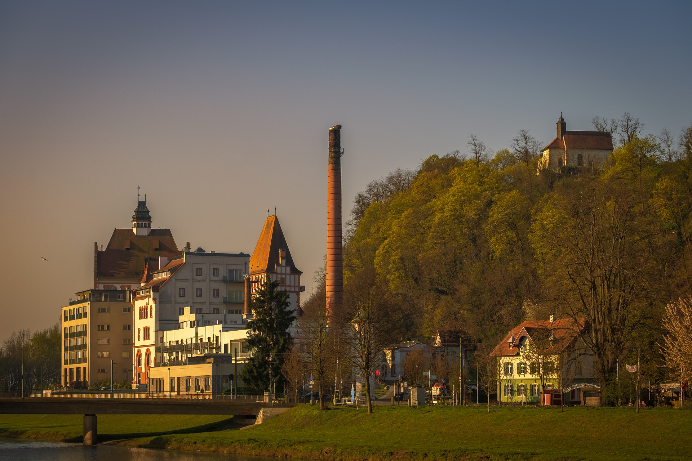
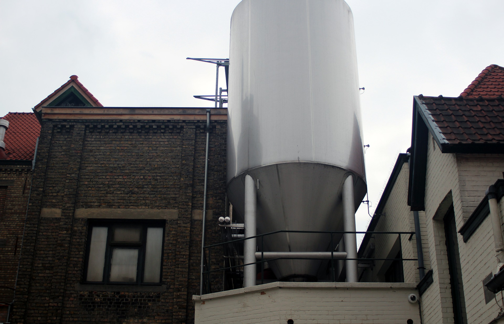
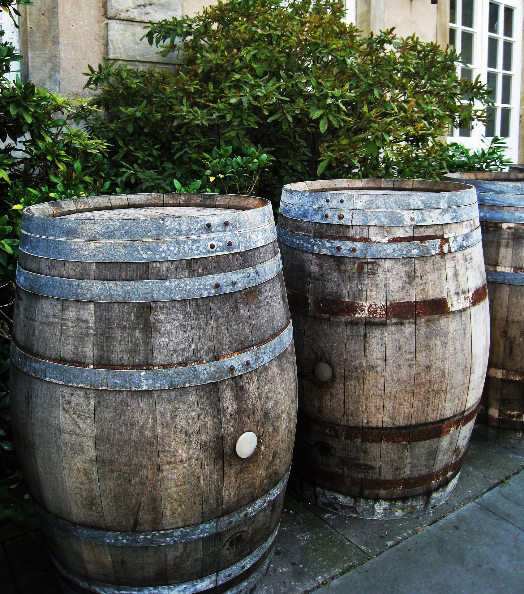
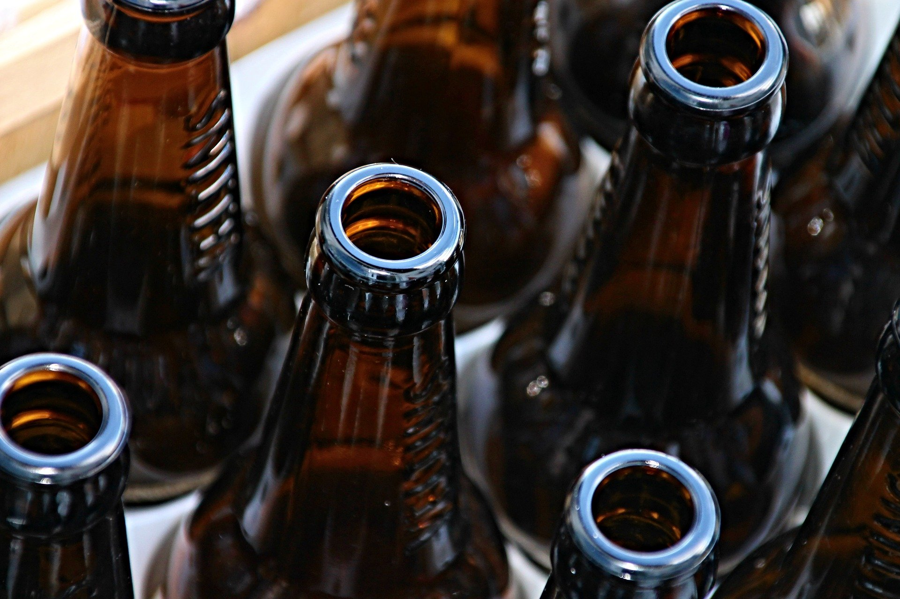
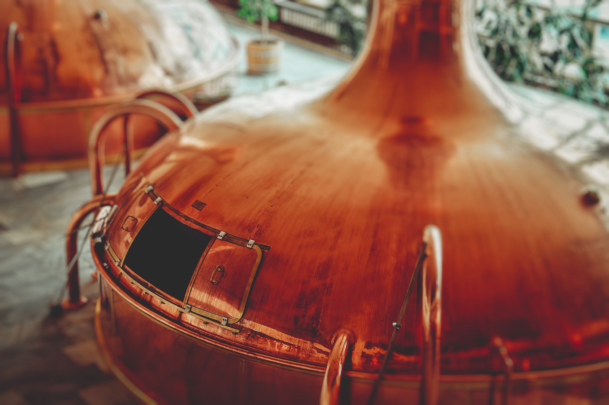
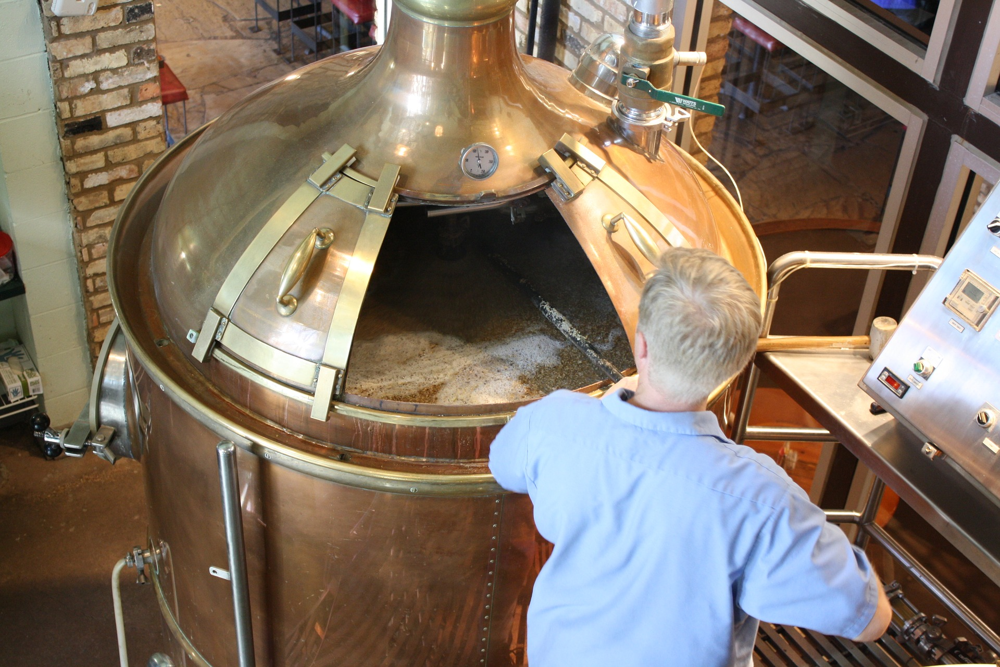
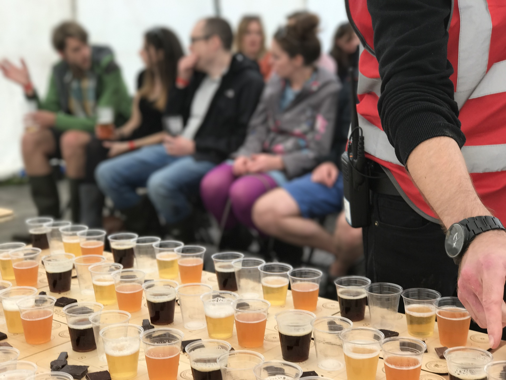
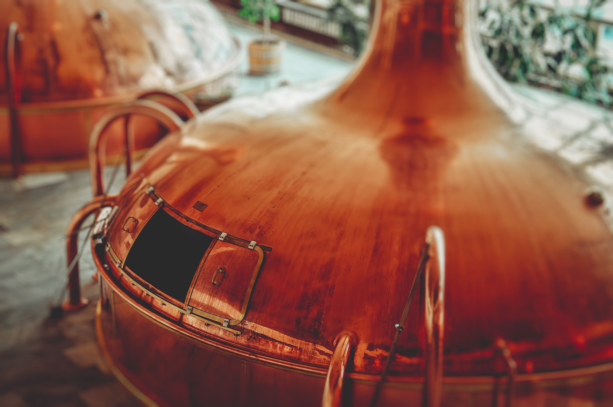
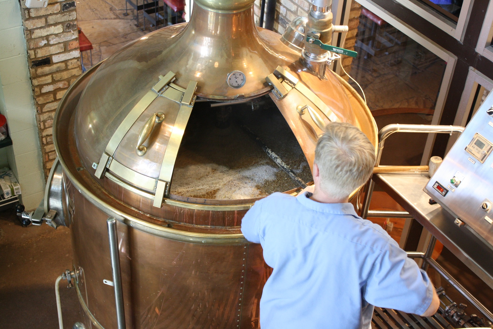
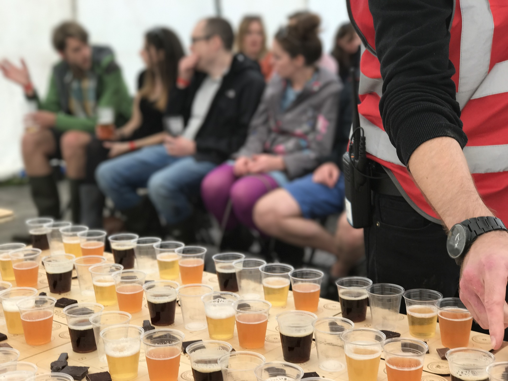

Werksverkauf und Brauereitour
Werksverkauf
Herzlich Willkommen,
<<<<<<< Updated upstream
Sie haben seit kurzem auch die Möglichkeit, unsere Spezialitäten gleich ab Werk zu erwerben. Die Verkaufsstelle befindet sich im Eingangsgebäude. Hier können sie zudem Merchandise (T-shirts, Anhänger, usw.) erwerben. Für mehr Informationen rufen Sie uns an oder benutzen Sie unser Kontaktformular.
((pictures))
=======




Sie haben seit kurzem auch die Möglichkeit, unsere Spezialitäten gleich ab Werk zu erwerben. Die Verkaufsstelle befindet sich im Eingangsgebäude.
Hier können sie zudem Souvenirs (T-shirts, Anhänger, usw.) erwerben. Für mehr Informationen rufen Sie uns an oder benutzen Sie unser Kontaktformular.
>>>>>>> Stashed changes
Brauereitour
Ihnen schmeckt unser Bier? Sie wollten schon immer erfahren, wie Bier hergestellt wird? Dann kommt jetzt Ihre Chance! Sie können nun mit unserer exklusiven Brauereitour Einblicke hinter die Kulissen erhalten.
 





Unser Angebot:
Basistour:
In Unserer Basistour erhalten Sie eine einzigartige Führung durch unsere Brauerei und erhalten Einblicke hinter die Kulissen.
Mittlere Tour*:
In Unserer Basistour erhalten Sie eine einzigartige Führung durch unsere Brauerei und erhalten Einblicke hinter die Kulissen. Sie können unserem Braumeister direkt über die Schulter sehen.
Im Anschluss an die Führung findet eine kleine Verkostung unserer schmackhaften Biersorten mit traditionellen Brezeln statt.
Promitour*:
In Unserer Basistour erhalten Sie eine einzigartige Führung durch unsere Brauerei und erhalten Einblicke hinter die Kulissen. Sie können unserem Braumeister direkt über die Schulter sehen.
Im Anschluss an die Führung findet eine kleine Verkostung unserer schmackhaften Biersorten mit traditionellen Brezeln statt. Nach der kurzen Stärkung können Sie Ihr individuelles Ettikett entwerfen und auf eine Flasche selber anbringen.
Bei der Promitour muss keine Mindestanmeldungszahl erfolgen, es sind auch Einzelführungen möglich.
Bitte beachten Sie, dass wir Führungen nur anbieten können, wenn sich mehr als 5 Personen angemeldet haben. Wir danken für Ihr Verständnis!
- Preise:
- Zeitslots:
Basistour:
Freitag:
14:00-15:00 Uhr
17:00-18:00 Uhr
Samstag:
10:00-11:00 Uhr
13:00-14:00 Uhr
<<<<<<< Updated upstream
Im Anschluss an die Tour können Sie sich mit Erinnerungsstücken vom Merchandiseshop eindecken, um den Besuch unvergessentlich zu machen.
=======
Im Anschluss an die Tour können Sie sich mit Erinnerungsstücken vom Souvenirshop eindecken, um den Besuch unvergessentlich zu machen.
>>>>>>> Stashed changes
Anmeldung:
Sie können sich umkompliziert per Kontaktformular verbindlich anmelden.
(*alkoholische Getränke werden nicht an Personen unter 16 Jahren ausgeschenkt)
Anfahrt: